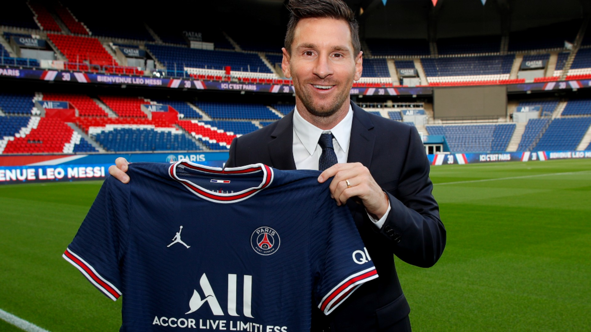
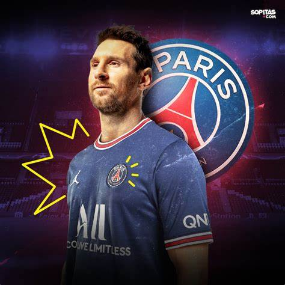

Lionel Andrés Messi Cuccittini (Rosario, Santa Fe; 24 de junio de 1987), conocido como Leo Messi, es un futbolista argentino que juega como delantero o centrocampista. Jugador histórico del Fútbol Club Barcelona, al que estuvo ligado veinte años, desde 2021 integra el plantel del Paris Saint-Germain de la Ligue 1 de Francia. Es también internacional con la selección de Argentina, equipo del que es capitán y máximo goleador histórico. Considerado con frecuencia el mejor jugador del mundo y uno de los mejores de todos los tiempos, es el único futbolista en la historia que ha ganado, entre otras distinciones, siete veces el Balón de Oro, seis premios de la FIFA al mejor jugador del mundo y seis Botas de Oro. En 2020, se convirtió en el primer futbolista y el primer argentino en recibir un premio Laureus, además de ser incluido en el Dream Team del Balón de Oro. Con el Barcelona ha ganado 35 títulos, entre ellos, diez de La Liga y cuatro de la Liga de Campeones de la UEFA, así como siete títulos de la Copa del Rey. Goleador prolífico, ostenta, entre otros, los récords por más goles en una temporada, en un año calendario, y en un mismo club; máximo goleador de La Liga, la Supercopa de España, la Supercopa de Europa y jugador no europeo con más goles en la Liga de Campeones de la UEFA, además de máximo goleador del Barcelona y de la selección argentina. Es el futbolista con más asistencias, desde que se tienen registros, en partidos oficiales. Nacido y criado en la ciudad de Rosario, a los 13 años se radicó en España, donde el Barcelona accedió a pagar el tratamiento de la enfermedad hormonal que le habían diagnosticado de niño. Después de una rápida progresión a través de la Academia juvenil del Barcelona, hizo su debut oficial con el primer equipo a los 17 años, en octubre de 2004. A pesar de ser propenso a lesiones en los inicios de su carrera, ya en 2006 se estableció como jugador fundamental para el club. Su primera campaña ininterrumpida fue la temporada 2008-09, durante la que el Barcelona alcanzó el primer triplete del fútbol español. En 2009, a los veintidós años, ganó su primer Balón de Oro y el premio al Jugador Mundial de la FIFA del año. Siguieron tres temporadas exitosas, en las que ganó cuatro Balones de Oro de forma consecutiva, hecho que no tenía precedentes. Hasta el momento, su mejor campaña personal es la temporada 2011-12, en la que estableció el récord de más goles en una temporada, tanto en La Liga como en otras competiciones europeas y se convirtió, en marzo de 2012, en el máximo goleador histórico de su club en competiciones oficiales. Durante las dos siguientes temporadas, también sufrió lesiones y, en 2014, perdió el Balón de Oro frente a Cristiano Ronaldo, a quien se considera su rival. Recuperó su mejor forma durante la campaña 2014-15, en la que superó los registros de máximo goleador absoluto en La Liga y la Liga de Campeones, y logró con el Barcelona un histórico segundo triplete, además de ganar su quinto Balón de Oro. Volvería a ganarlo por sexta y séptima vez en 2019 y 2021. Como internacional argentino, Messi ha representado a su país en diez torneos mayores. A nivel juvenil, ganó junto con la selección sub-20 la Copa Mundial de Fútbol Sub-20 de 2005, torneo en el que finalizó como mejor jugador y máximo goleador, y una medalla de oro en los Juegos Olímpicos de 2008, con la sub-23. Por su estilo de juego de pequeño driblador zurdo, se lo comparó con su compatriota Diego Maradona quien, en 2007, declaró al adolescente su «sucesor». Después de debutar en la selección mayor en agosto de 2005, en el Mundial de Alemania 2006 se convirtió en el argentino más joven en jugar y en marcar en un mundial. Al año siguiente jugó la Copa América, donde fue nombrado mejor jugador joven del torneo. Como capitán desde agosto de 2011, llegó con su equipo a las finales del Mundial de Brasil 2014, de la Copa América 2015 (certámenes en los que fue elegido mejor jugador del torneo) y de la Copa América Centenario, además de ganar la Copa América 2021 ante Brasil en el Maracaná.
Messi debutó con el primer equipo el 16 de noviembre de 2003, en un partido amistoso contra el Porto, en aquel entonces entrenado por José Mourinho, en la inauguración del Estadio do Dragao. El 18 de febrero de 2004, fue convocado para jugar otro amistoso, esta vez contra el FC Shakhtar Donetsk. Comenzó la pretemporada jugando tres partidos amistosos en julio de 2004: ante el Banyoles el 16, el Figueres el 18 y el Palamós el 20 en el Camp Nou. Contra este último club, en el minuto '74, convirtió su primer gol con el primer equipo, que puso el 0-4 parcial de un partido que el Barcelona ganó 0-6. Frank Rijkaard lo hizo debutar en partido oficial contra el R. C. D. Español, en el Estadio Olímpico Lluís Companys el 16 de octubre de 2004, cuando sustituyó a Deco ocho minutos antes de terminar el partido. Con diecisiete años, tres meses y veintidós días, se convirtió en uno de los canteranos más jóvenes en debutar en La Liga. El 27 de octubre debutó en la Copa del Rey ante el Gramenet y el 7 de diciembre en Liga de Campeones contra el FC Shakhtar Donetsk en el Donbass Arena. Marcó su primer gol oficial al Albacete Balompié, en la trigésimocuarta jornada del campeonato de Liga el 1 de mayo de 2005. Con 17 años, 10 meses y 7 días, se convirtió en el jugador más joven en marcar un gol en la Liga para el Barcelona. Bojan Krkić, en 2007, rompió este récord al anotar un gol a pase de Messi, en un partido de Liga contra el Villareal CF. Durante la temporada, jugó también con el Barcelona B (17 partidos y 6 goles). En aquella temporada, el Barcelona logró establecerse como campeón de Liga, luego de cinco temporadas sin conseguir el título. Tras esta temporada, el equipo escocés Glasgow Rangers estuvo interesado en obtener la cesión de Messi, pero fue rechazada por el Barcelona. El 13 de agosto de 2005, Messi jugó el partido de ida por la Supercopa de España contra el Betis. Este fue, luego de jugarse el partido de vuelta en el Camp Nou, el primer título de la temporada que ganó el equipo catalán. El 24 de agosto, disputó con el primer equipo el Trofeo Joan Gamper ante la Juventus en el Camp Nou. El 16 de septiembre, por segunda vez en tres meses, el Barcelona anunciaba una actualización de su contrato, en la que se mejoraba su paga como miembro del primer equipo y se extendía hasta junio de 2014. El 26 de septiembre obtuvo la nacionalidad española. Dos días más tarde, jugó su primer partido en la Liga de Campeones frente al Udinese italiano en el Camp Nou. Aficionados en el estadio del Barcelona lo ovacionaron hasta su sustitución, así como también apreciaron su compostura con la pelota y combinaciones de pases con Ronaldinho. Después de que ganara el Balón de Oro y la Bota de Oro en el Mundial sub-20, a principios de la temporada 2005-06 a Messi se lo señaló como un serio aspirante a ser el jugador revelación del año.[cita requerida] En la segunda mitad de 2005, la prensa española hablaba de un duelo entre Messi y el joven brasileño Robinho, fichado por el Real Madrid ese mismo año, a quienes consideraba las futuras estrellas de La Liga. Ambos fueron titulares en el primer partido de Messi ante el Real Madrid, que ganó el equipo catalán por 0-3, recordado por los aplausos del estadio Santiago Bernabéu a los jugadores del Barcelona tras los dos goles de Ronaldinho. Messi tuvo un destacado papel en el Clásico y dio además el pase del primer gol a Samuel Eto'o. En septiembre, recibió en Italia el premio Eurochampion, que distingue al mejor jugador joven del mundo, y en diciembre, la revista italiana Tuttosport le otorgó el premio Golden Boy al mejor jugador joven de Europa. Messi, con 225 puntos sobre 300, superó a Wayne Rooney (127) y a Lukas Podolski (74). Por otra parte, la prensa destacó su actuación en los octavos de final de la Liga de Campeones, el 22 de febrero de 2006 ante el Chelsea de Mourinho en Stamford Bridge, a la vez que Diego Maradona, en una entrevista con la BBC, lo señaló como quien "ocuparía su lugar" en el fútbol argentino. En un encuentro que el Barcelona ganó por 1-2, Messi pateó cinco veces a puerta, todas entre los tres palos, y convirtió un gol en el minuto 72. En el partido de vuelta, jugado en el Camp Nou, sufrió una lesión que lo apartó del equipo hasta el final de la temporada.[cita requerida] Hasta ese momento, llevaba anotados 6 goles en 17 partidos en liga y uno en Champions. El Barcelona finalizó la temporada como campeón de Europa tras ganarle al Arsenal el 17 de mayo en el Stade de France y campeón de la Liga.
A pesar de que La Liga había aprobado el nuevo contrato por cinco años de Messi con el Barcelona (en el que el jugador aceptaba rebajarse el sueldo durante el primer año), a último momento Laporta le comunicó a Jorge Messi que, por cuestiones de presupuesto, no podía renovar al jugador. El 5 de agosto de 2021, el Barcelona anunció que no podía mantener a Messi, pues hacerlo implicaba sobrepasar el tope de gastos que le permitía la liga española. Messi jugó un total de 778 partidos oficiales, marcó 672 goles y ganó 35 títulos (entre ellos diez Ligas y cuatro Ligas de Campeones). En una conferencia en las instalaciones del club, el jugador afirmó: "Lo di todo por este club, desde el primer día que llegué hasta el último, nunca imaginé tener que despedirme porque no lo pensaba. Hice todo lo que pude para quedarme y no fue posible".
El 10 de agosto Paris Saint-Germain anunció la llegada de Messi a través de un video en sus redes sociales. El jugador firmó un contrato por dos años con opción de extenderlo una temporada, con un salario de 36,5 millones de euros y usaría el dorsal 30, el mismo con el que debutó en el Barcelona. El 29 de ese mismo mes, jugó su primer partido con el equipo ante el Stade de Reims, por la cuarta fecha de la Ligue 1. Ingresó al campo en el minuto '65, en sustitución de Neymar. El partido acabó 0-2 a favor del equipo parisino, con dos goles de Mbappé. El 28 de septiembre, marcó su primer gol con el PSG, en el minuto '74 después de una pared con Mbappé, en la segunda jornada del Grupo A de la Liga de Campeones ante el Manchester City de Guardiola, con una victoria de los parisinos en el Parque de los Príncipes por 2-0. El 19 de octubre, marcó su primer doblete, el segundo gol en el minuto '74, después de una falta sobre Mbappé en el área rival, un penal que marcó a lo Panenka. Fue por el tercer partido de clasificación en la Liga de Campeones, ante el Leipzig de Jesse Marsch, con una victoria del equipo local por 3-2 en París.
El 20 de noviembre, por la décimo cuarta fecha, anotó su primer gol en la Ligue 1. El marcador final fue 3-1, tras remontar un 0-1 parcial ante el Nantes. Hasta esa fecha, el equipo continuaba líder del torneo, con una ventaja de diez puntos sobre el Lens. El 28 de ese mes, marcó un hat-trick de asistencias ante el Saint-Étienne, dos a Marquinhos y una a di María, con victoria 1-3 para los visitantes en el Geoffroy-Guichard. Al día siguiente, ganó su séptimo Balón de Oro y su octavo Pichichi. El 7 de diciembre, en la última jornada de clasificación para octavos de final de la Liga de Campeones, anotó otro doblete para la victoria de su equipo por 4-1 ante el Brujas. En ese partido, igualó a Cristiano Ronaldo como jugador que a más equipos (38) les ha convertido goles en la competición europea y, con 758 goles como profesional, superó a Pelé (757). En diciembre, la IFFHS lo incluyó en el equipo Conmebol del año y lo reconoció como mejor jugador y creador de juego en esa confederación. El 2 de enero de 2022, Messi dio positivo de coronavirus durante sus vacaciones en Argentina. Tras estar en aislamiento desde el 28 de diciembre y dar negativo en una nueva PCR, pudo volver a París y reincorporarse a los entrenamientos, aunque no se le realizaron nuevas pruebas para descartar secuelas. El 22 de ese mismo mes, fue convocado ante el Reims, en lo que fue su primer partido del año, esta vez por la vigésimo segunda fecha de la Ligue 1. Entró al campo de juego como suplente en la segunda mitad del encuentro, que acabó con un 4-0 para el equipo parisino. El 17 de enero, fue incluido en el FIFA/FIFPro World XI por decimoquinta vez consecutiva. El 15 de febrero, en la serie de octavos de final de la Champions League 2021-22 ante el Real Madrid, erró un penal en el partido de ida que terminó empatado 1-1. Su desempeño recibió duras y controvertidas críticas de medios franceses, como por ejemplo L'Équipe, que lo calificó con un 3. En la vuelta en el Santiago Bernabeú el 9 de marzo, el PSG empezó ganando con un gol de Mbappé, pero perdió debido a un hat-trick de Benzema. Al siguiente partido, como locales ante el Bordeaux, tanto Messi como Neymar fueron abucheados y silbados.